Same brief, three spatial answers. Every canopy in every frame is one of the two
approved PlantFactory cherries (open-crown-s19 hero, open-crown-s71) placed as real
geometry — no diagram circles. Stage, torii, bridge, river, paths, and lanterns are proportioned
graybox proxies. All three boards share the intimate footprint: playable clearing ~38 m radius,
wooded berm closing the horizon by ~78 m, proposed camera orbit cap 30 m (baselines cap at 25 m;
R2.1 allowed 82 m). The 1.75 m figure on stage and the seated-height figures on the lawn are scale checks.
Board A Amphitheater Axis
One ceremonial axis, south to north: arrival walk → audience crescent → stage → river →
torii threshold climbing into the grove. The bridge sits off-axis west so the axis stays a sightline, not a
walkway. This is the R2 idea kept — but at Forest/Autumn scale, with the grove actually present.
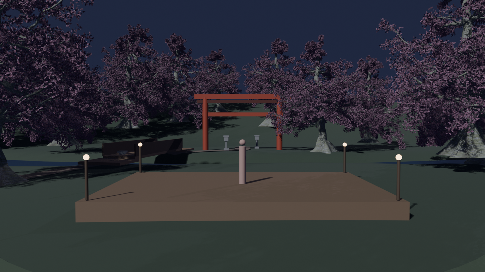
Front — performer's eye height. Torii 26 m behind stage on axis; grove closes every gap.
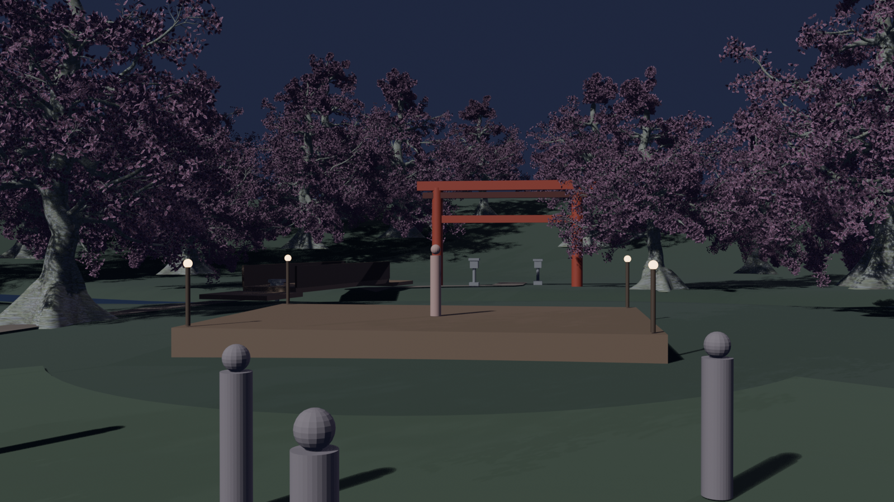
Audience — from the back of the lawn crescent, 20 m out. Stage, performer, torii stack on one line.
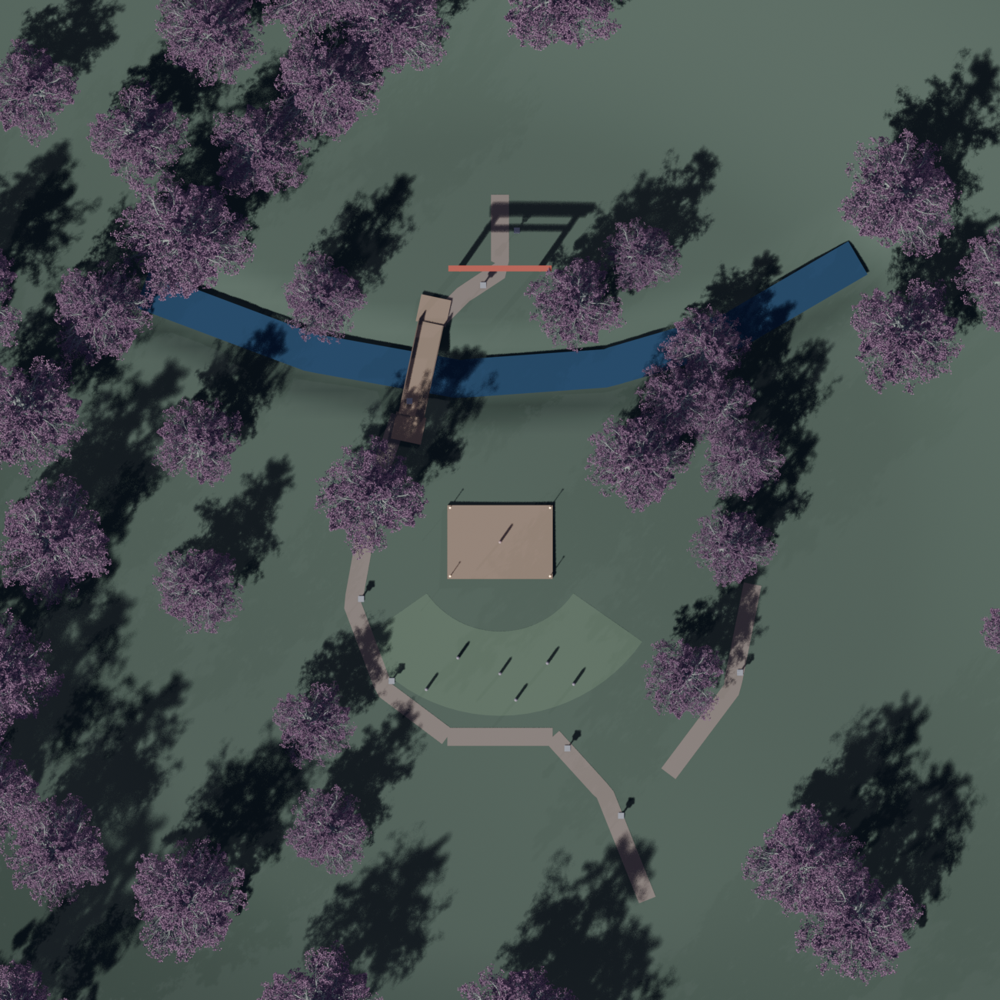
Plan — arrival SE, crescent south, river band north, bridge west, service spur east.
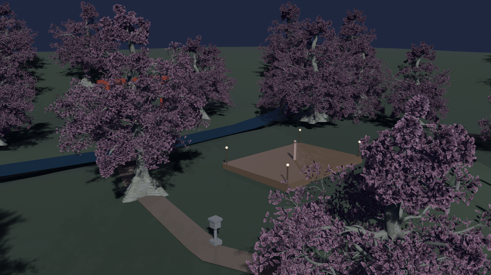
Three-quarter — the bowl: heroes frame the stage at 13 m, mid-ring at 21–33 m, berm silhouettes behind.
Strength: the clearest ceremonial read — every camera orbit angle eventually lands on the axis.
Risk: the most symmetric of the three; needs asymmetric planting detail to avoid feeling formal.
Board B Riverside Diagonal
The river runs NW–SE straight through the garden and the stage sits on its bank. The garden
walk follows the water, crosses the bridge, and finds the torii three-quarter across the river — you discover
it while orbiting, it never lines up square. The most asymmetric and most "landscape" of the three.
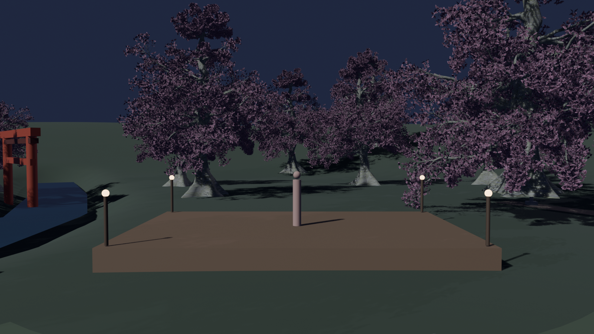
Front — stage angled 12° toward the lawn; river glints behind stage-left.
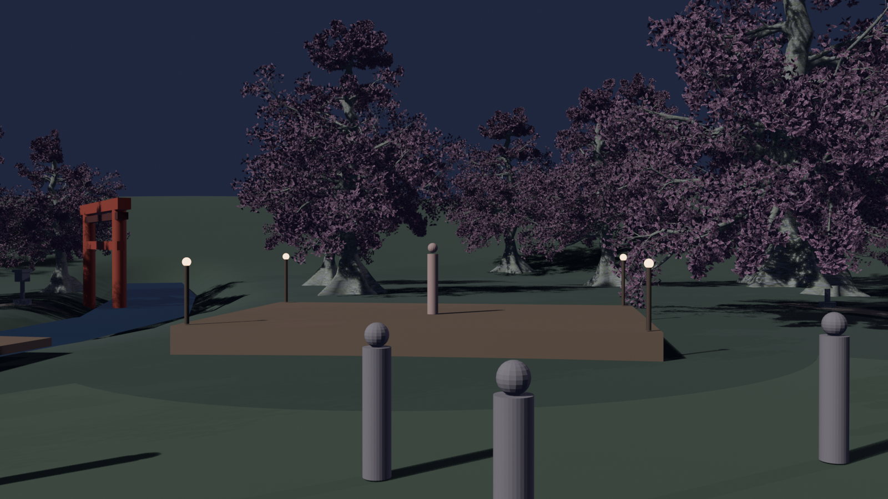
Audience — the torii reads across the water at left; heroes overhang the bank.
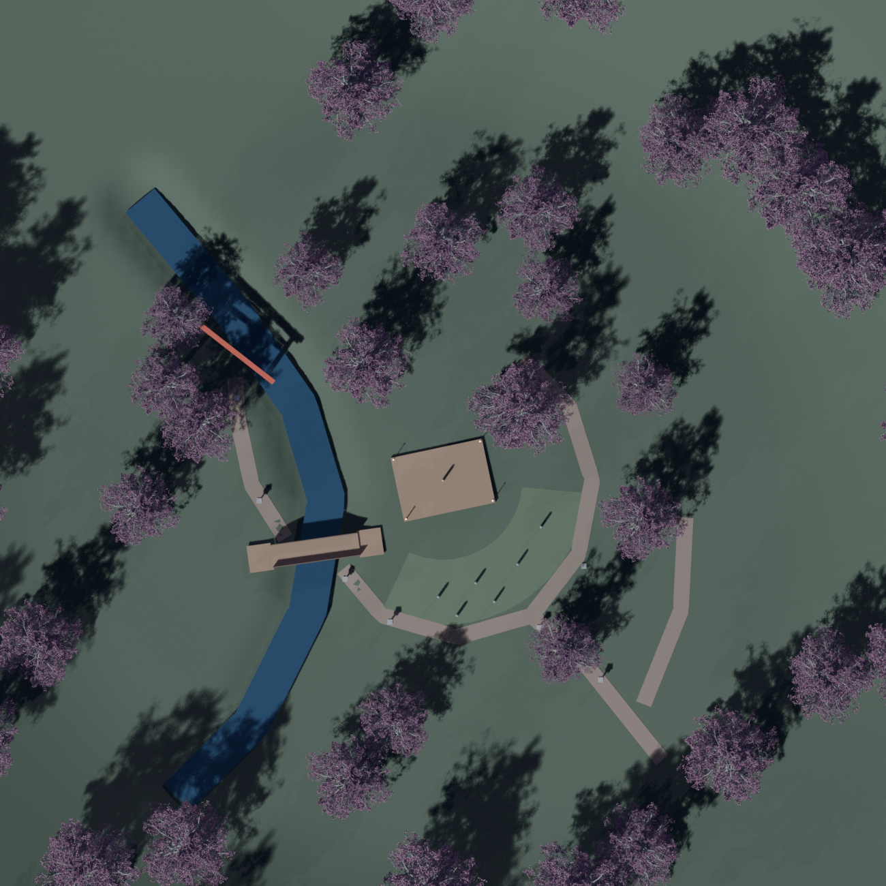
Plan — river diagonal, bank walk, bridge SW, shrine walk on the far bank, garden loop east.
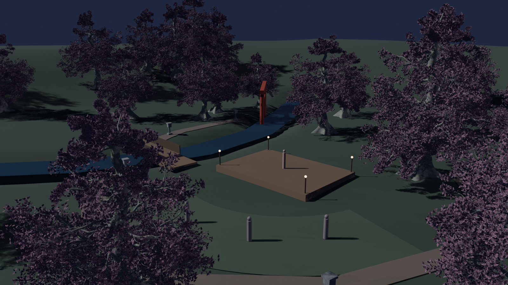
Three-quarter — stage on the bank, bridge and torii upstream, audience pads in the foreground.
Strength: water is a first-class citizen — reflections, the bank walk, and the far-bank shrine give the orbit real variety.
Risk: the river divides the garden; the west half is only reachable over one bridge, so it must stay scenery-first.
Board C Grove Room
The stage sits inside a grove pocket with hero canopies leaning over its edges — the audience
looks INTO a room made of blossom. The stream wraps behind the room; crossing the bridge delivers you at the
torii gate. Smallest clearing, highest canopy density, most intimate of the three.
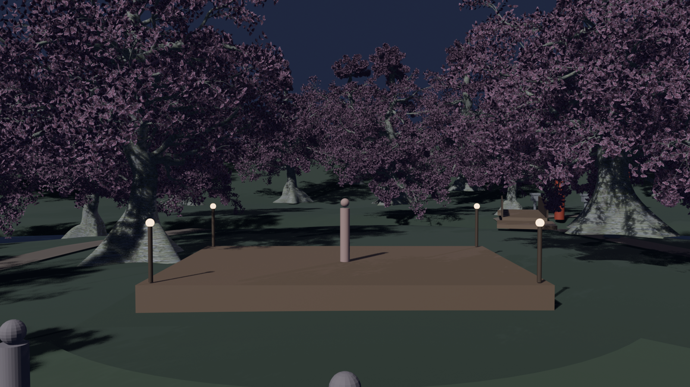
Front — canopy over both stage shoulders; the nearest hero trunk is 8.7 m from center stage.
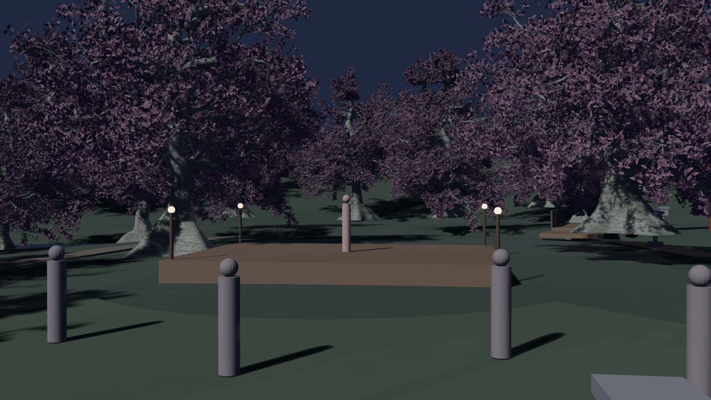
Audience — the room reads as walls of blossom; torii and bridge glimpsed through the gap.
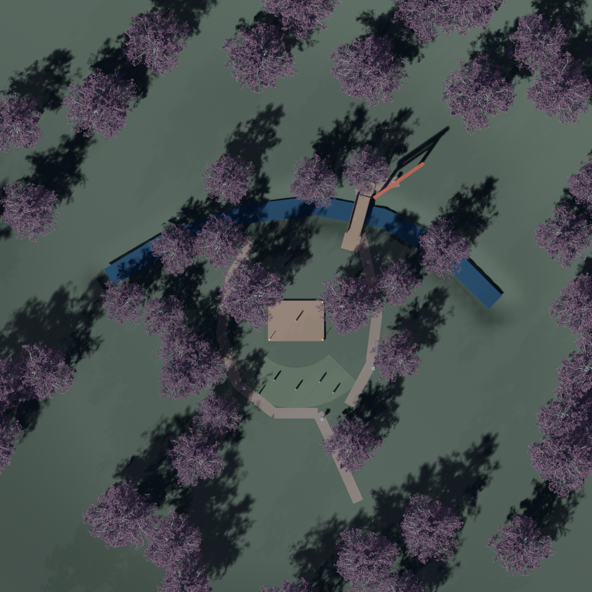
Plan — stream wraps the room north; bridge at the NE gap; the torii waits across the water.
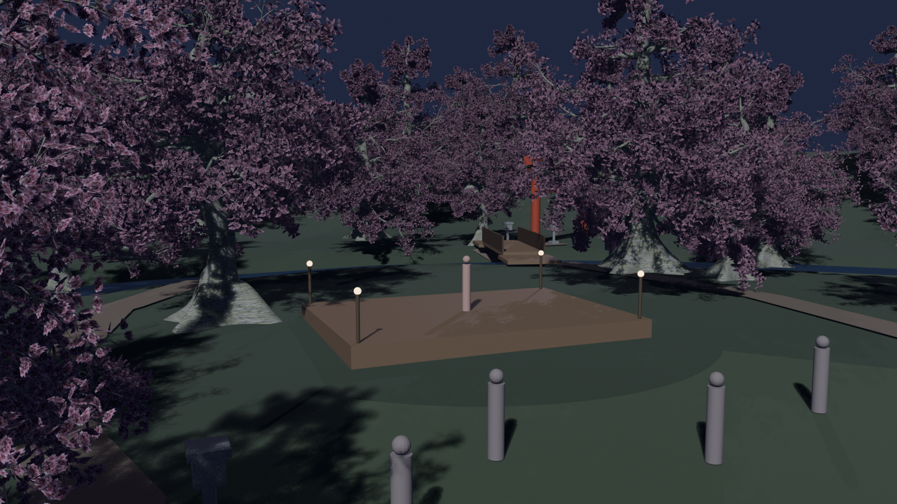
Three-quarter — from the south opening: the only view that sees the whole room at once.
Strength: the strongest hanami feeling — blossom is overhead, not just background. Petal fall from the overhanging heroes lands ON the stage (per the "petals from nearby canopies" decision).
Risk: heaviest per-frame canopy cost; the orbit spends the most time near foliage, so LOD and draw-call budgets matter most here.
What these boards are and aren't. These are moonlit EEVEE graybox renders from a parametric Blender
script (scripts/render-blossom-boards-r3.py) — the point is composition, scale, and sightlines,
not final art. Real in all frames: the two approved cherry GLBs, all distances, terrain relief, the carved
river channel, and the berm horizon. Proxy: stage deck, torii, bridge, lanterns, path ribbons, figures.
Not yet designed anywhere: bark/ground materials, water shading, petal fall, fireflies, koi, god rays — those
come after ONE board is approved. Only two cherry variants exist today; a wider family (weeping bank cherry,
young accents) would need a new PlantFactory authoring pass and would slot into whichever board wins.